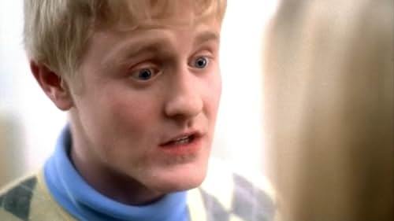
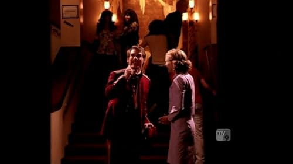
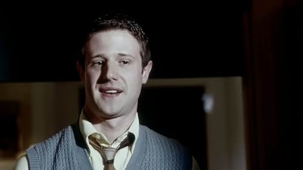
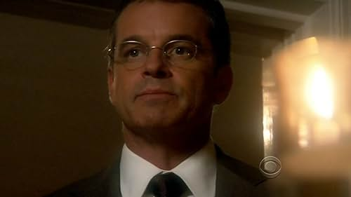
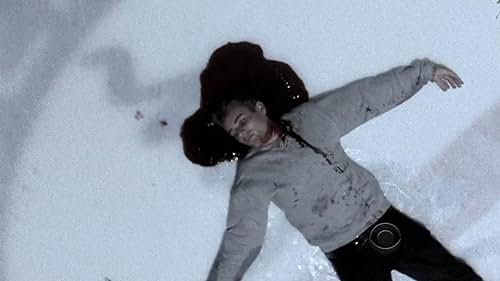

1x01 - Look Again

Detective Lilly Rush interviews a maid who says she witnessed the beating death of a teenage girl during a party on a luxurious estate more than 25 years ago.
1x02 – Gleen
Lilly re-investigates a 1980's murder where a young housewife was blown up by a bomb in her backyard. Meanwhile, the victim's now-grown daughter is bothering a pervert whom she believes is the killer, but is he?
1x03 – Our Boy Is Back

When a serial rapist sends a letter to the squad announcing his return to Philadelphia after five years, the team re-investigates the 1998 murder of a college student who was believed to be one of his victims.
1x04 – Churchgoing People

Lilly looks into a man's murder that led to the dissolution of a religiously-involved family, but she finds something fishy about every member of the former household.
1x05 – The Runner
The team reopen an unsolved case about a young policeman was murdered in 1973, Joe Washington, who was involved in a drug case at dangerous zone.
1x06 – Love Conquers Al

A petty thief, hoping for a reduced prison sentence, relays information pertaining to the night in 1981 when a high school track runner was fatally shot, placing doubt on the guilt of the man now serving a life sentence for the crime.
1x07 – A Time to Hate

The team investigates a 1964 case when a young college student was killed outside a gay bar.
1x08 – Fly Away

After two years in a coma, a mother wakes in the hospital. Rosie hardly remembers the night she and her daughter were thrown out of a window, killing her daughter. Lilly and Scotty look into the case and find a whole nest of bad secrets.
1x09 – Sherry Darlin'

A man calls Detective Lilly Rush to confess that he murdered his grandmother in 1989 and buried her in the basement of his old house.
1x10 – Hitchhiker
The team is searching for a suspected serial killer. The murders started with a young man who was hitchhiking home from the casino after winning $3000. They have little to go on other than a boot print.
1x11 – Hubris

A young college girl had been killed several years earlier and laid out in a pond. The college professor, with whom the girl was having an affair, was always suspected but there was nothing solid to go on. Another girl is killed the same way.
1x12 – Glued

Lilly looks into one of Lt. Stillman's old cases, involving the death of an 8 year old boy killed on his way home from the corner store.
1x13 – The Letter
The 1939 case of a young lady living in a boarding house for "women of color" is reopened and Rush tries to solve it for Sadie's daughter, who has been ashamed of her own heritage since the murder.
1x14 – The Boy in the Box

The 1950's notorious cold case of the "boy in the box" is reopened and it's discovered that he resided in a Catholic orphanage with his sister until his sudden adoption before his death.
1x15 – Disco Inferno
The team investigates a 1978 case where 22 people were killed in a fire at a popular disco after new evidence shows that one of the victims was shot before the fire.
1x16 – Volunteers
Two decaying skeletons are discovered in an old building. Rush and the team learn that they were two hippies working for an underground group who were murdered in 1969.
1x17 – The Lost Soul of Herman Lester
An up and coming basketball player on the way to making it big is found dead on a street playground. Was it a street robbery gone bad, an overly competitive player who wanted his slot or something else?
1x18 – Resolutions
An alcoholic comes in and tells a tale of a hit and run. She is sure that she killed him when she drove drunk on New Years eve.
1x19 – Late Returns
A man is found shot to death in his driveway. The team re-open a 1992 murder of a young woman, a Democratic worker, who went missing after leaving a political event on Election night.
1x20 – Greed

The team reopen the 1980's case of a wealthy corporate stockbroker who set up a Ponzi scheme and left many colleagues broke when it crashed, after which he was murdered in an apparent carjacking.
1x21 – Maternal Instincts

A young man arrested for robbing a little old lady reluctantly gets the team to reopen the case of his mother, who was stabbed to death in 1989 when he was three years old. They discover the story goes much deeper than just her murder.
1x22 – The Plan

The Team gets an anonymous letter saying the 1999 accidental death of a swim coach at a military academy was the result of a carefully orchestrated plot.
1x23 – Lover's Lane

The team reopens the case of Eve, a fifteen-year-old raped and murdered in 1986 after getting involved with a sleazy adult man who promised to make her a famous pop star if she'd run away with him.
2x01 - The Badlands

The triple murder of a couple running a restaurant and their employee is reopened when it is revealed in court that the man who was originally charged with the crime was robbing a store at another location at the time of the murders.
2x02 – Factory Girls

The detectives reopen a World War II era case of a female factory worker who died at work from what was believed to be an accidental fall.
2x03 – Daniela
Lilly and Scotty are confronted by a battered woman whose pervert husband filmed a super 8 snuff film back in 1979 of a young girl presumably being shot.
2x04 – The House

Outside a prison, the bones of an inmate who tried to escape during the broadcast of Johnny Cash's prison concert in 1968 are found in an old underground escape tunnel. Suspiciously, that inmate was supposedly killed inside the prison at another time...
2x05 – Who's Your Daddy

Lilly meets a teenage girl named Kara whose parents were shot point-blank back in '91 and offers to reopen their murder files.
2x06 – The Sleepover
The Cold Case team reopens a 1990's murder of a shy, nerdy twelve-year-old who had a sleepover at a mentally disturbed rich girl's house. They discover quickly that something sinister happened that night, but what was it?
2x07 – It's Raining Men

Lilly and Scotty reopen the 1983 cold case of an openly gay young man who tried to bring attention to the AIDS epidemic, much to the fear of the rich, closeted men he associated with.
2x08 – Red Glare
The team investigates the murder of a school teacher in 1953 whose case wasn't very well investigated since he believed in integration.
2x09 – Mind Hunters

The Cold Case team is assigned to a very disturbing case of a sinister serial killer who kidnaps women and whacks off their heads - and he might be closer to home than they realize.
2x10 – Discretion

The team investigates the 2000 slaying of an up-and-coming Connecticut prosecutor who was about to try a high profile murder case. The early investigation discovers that prior to his death he seemed to have been heavily distracted by something.
2x11 – Blank Generation

The 1970's death of a man killed by cyanide poisoning is reopened. Meanwhile, Scotty Valens is told some upsetting news and decided come back to work.
2x12 – Yo, Adrian
An underdog boxer dies from a knock-out on a fight that should have been called by the referee and the boxer's corner. The plot was deeper when the team re-investigates this cold case.
2x13 – Time to Crime
The 1980's case of a little girl is reopened after the murder weapon, an automatic gun, is turned in. It's revealed that she was shot to death while at a playground with her mother at night.
2x14 – Revolution
Detectives Rush and Valens reopen a murder case from December of 1969 after serving an arrest warrant to a draft dodger who claims he is innocent of murdering his girlfriend.
2x15 – Wishing
In the early 90's, the death of a mentally handicapped teen has been reopened. Drawings depicting the incident at the railroad tracks surface, which indicate it may not have been an accident as originally believed.
2x16 – Revenge
The Cold Case team investigates the death by drowning of a young boy who disappeared from an outlet mall in the 1990's. They uncover a bizarre, elaborate kidnapping plot in the process.
2x17 – Schadenfreude
The 1980's case of a murdered surgeon's wife is reopened, and the team learn that originally it was thought to have been committed by her husband, who was facing a malpractice lawsuit.
2x18 – Ravaged

The 1995 case of an alcoholic barmaid is reopened. The team learn she was struggling to recover for the sake of her neglected children, and that she was often a target for jokes and harassment.
2x19 – Strange Fruit
Jeffries reopens a 1963 case in which he, as a child, found the body of a 16-year-old African American boy who had been planning to attend Martin Luther King's March on Washington.
2x20 – Kensington

An optimistic young mill worker is murdered months after the mill closes.
2x21 – Creatures of the Night
An apartment building doorman is murdered while his girlfriend dances at the Rocky Horror Picture Show, and Lilly tries to pursue the killer.
2x22 – Best Friends

An old truck is found in a river with human remains inside, leading the team to re-open the case of a girl who disappeared in 1932. When the girl's former best friend is interviewed, questions arise: just best friends, or forbidden love?
2x23 – The Woods

When a serial killer resurfaces after walking away from his convictions, Lilly unravels his childhood, which was filled with abuse, rape, murder and insanity, and he follows her every move.
3x01 – Family

After a teenage girl who was dumped in the garbage by her parents 17 years earlier is approached by a man claiming to be her father, the team re-investigates the hit and run death of her father, Jimmy in 1988.
3x02 – The Promise
Lilly reopens the case of an overweight film student who was subjected to a cruel 'Hog Scale prank' at a fraternity party, after which she mysteriously died in a fire.
3x03 – Bad Night
Lilly reopens the 1978 case of Angus, a young boy who was killed soon after a car accident that paralyzed his friend around the time the slasher film Halloween was released.
3x04 – Colors
The case of a baseball player beaten to death with his own bat is reopened, and it's discovered that he had many enemies, and that his white girlfriend sparked even more racism and prejudice towards him.
3x05 – Committed

A former mental patient named Betty Petrowski dies. The woman's only child, her son Otis, is called to identify the body and finds it is not the body of his mother. Det. Rush and her colleagues begin the search for Otis' real mother.
3x06 – Saving Patrick Bubley

Brothers are being killed one by one as they grow to their teens. Flashbacks show how the family enjoyed Thanksgiving together until the killings started and the mother got addicted to drugs.
3x07 – Start-Up
In the nineties, business school graduates Scott and Amy start up a computer health care business called Lionstaff, but Amy dies of a heart attack soon after and Lilly reopens the case.
3x08 – Honor

The team investigates the murder of a former POW who was killed days after coming home from the Vietnam War.
3x09 – A Perfect Day

The remains of a small girl are found under a bridge. The story goes back to the 60's and turns out the girl has a twin sister still alive. A sad family story begins to unravel.
3x10 – Frank's Best
The friendly owner of a local grocery store is murdered and Lilly reopens his case, finding that Frank was having issues with his rebellious son, his son's trashy friend Stump and his employee, Ricardo.
3x11 – 8 Years
A young man's case is reopened after his 1988 murder went unsolved. The team look at his three friends to see if any of them had the motive for the shooting.
3x12 – Detention

A grunge high school boy supposedly kills himself in 1994 and Lilly reopens his case, learning of the dark secrets he was keeping with three other outcast students during their detention together.
3x13 – Debut

The Cold Case team investigates a 1960's case of a young débutant who fell to her death. They also discover that the girl's mother was very traditional and expected her daughter to follow order.
3x14 – Dog Day Afternoons
The unsolved case of a quiet and shy girl who dated a bank robber is reopened by the team after a similar crime occurs at the same bank.
3x15 – Sanctuary

The Cold Case team investigates the case of a woman who was disemboweled violently by an unknown killer - a woman Scotty knew from his undercover years.
3x16 – One Night

During a slow night at the P.P.D., it turns out to be anything but when a pitiful man shows up with a dirt-encrusted shovel, claiming to have just buried somebody alive.
3x17 – Superstar

A young female tennis player who won against a guy in a "battle of the sexes" style playoff is discovered strangled to death the next day, and her case is reopened.
3x18 – Willkommen
Four years after the slaying, the Cold Case team investigates the murder of a cabbie-turned-actor who was shot to death outside the community theatre on opening night...
3x19 – Beautiful Little Fool

A 1929 case of a beautiful young singer is reopened, and the team learns she had a romance going with a man named Nick Bartleby.
3x20 – Death Penalty: Final Appeal

A corrupt cop's suicide leads to new questions about an old murder, challenging Detective Jeffries' belief that the man on death row for the crime is guilty -- and also putting Jeffries on a collision course with an arrogant ADA.
3x21 – The Hen House

The "accidental" death of a woman newspaper columnist in 1943 is reinvestigated when old newspaper files indicate that the author of the "Hey Lo" column could have been murdered by a Nazi officer posing as a Dutch Jew.
3x22 – The River
A successful and loved emergency room doctor's case is reopened and Lilly learns that his life was rapidly becoming unmanageable thanks to his gambling addiction.
3x23 – Joseph
The recent case of a counselor working at a rehab center for drug-addicted youth is reopened, but there's much more going on than meets the eye. Detective Rush starts to cross the line of ethics as she becomes too emotionally invested.
4x01 – Rampage
A 1995 mall shooting spree, in which two teenagers killed and wounded several people before committing suicide, is reopened when it is found that there may be a third person involved.
4x02 – The War at Home
Rush and the team try to solve the murder of a soldier who was deployed in the post-9/11 War on Terror, only to discover that she was having trouble coping with her trauma and holding her family together at the same time.
4x03 – Sandhogs
A mining cave-in was no accident that left John Donovan's lifeless body amongst the rubble. A tragic end to a young man and dashed hopes of his beloved.
4x04 – Baby Blues

The team investigates an unsolved death of a baby girl who supposedly drowned, and they realize that any one of a long list of suspects could be a killer.
4x05 – Saving Sammy
The case is reopened of an autistic boy whose parents were both shot and killed while picking up Chinese takeout. Meanwhile the boy's near-adult sister, Ruby, wants custody of him.
4x06 – Static
The 1958 death of an influential and popular disc jockey is reopened when it becomes clear it was not a suicide as originally believed.
4x07 – The Key

The team reopens a case from the 1970's in which a timid housewife and schoolteacher was murdered. They soon learn that she was going through a rebellion at the time and attending sexy key parties, much to her daughter's horror.
4x08 – Fireflies

The case of a little girl who was seemingly abducted from her bedroom in the mid-seventies is reopened.
4x09 – Lonely Hearts
A handsome con-artist commits suicide as an awkward and overweight woman's dating-service tape, which eventually resulted in a relationship, plays on his VCR. The team then reopens her 1989 murder.
4x10 – Forever Blue

The murder of a cop in 1968 is reopened when a dying jailbird makes a deal with the police in order to get released earlier and tells them that he found drugs in the victim's car.
4x11 – The Red and the Blue
When the murder weapon used in the 2000 murder of country singer, Truck Sugar is found, Lilly must travel to Tennessee with a reluctant Scotty in tow to re investigate the case.
4x12 – Knuckle Up

The Cold Case team discovers the body of a prep student rolled up in a barrel in an inner-city area. They learn that he was involved in an underground fight club, and possibly even a much darker incident involving a friendly businessman.
4x13 – Blackout

The team investigates the 1996 death of an abrasive, wealthy woman during a power blackout at a family gathering in her former husband's home.
4x14 – 8:03 AM

The team re-investigates the case of Skill Jones and Madison Reed, two teenagers who were fatally shot in different parts of town on the same day in 2002, at precisely 8:03 AM.
4x15 – Blood on the Tracks

When remnants of a bomb are found during remodeling of an old house, the team reopens the case of a married couple who died there in 1981, in what was thought to be an accidental gas leak.
4x16 – The Good-Bye Room

Lilly and crew investigate the events at a now abandoned home for unwed mothers that led to the death of a patient and the adoption of her infant.
4x17 – Shuffle, Ball Change

The skeleton is found of a sixteen year old who wanted to become a dancer, against the wishes of his grocer/father and wrestler/brother.
4x18 – A Dollar, a Dream

After seven years, the body of a missing woman who had been living in her car with her two daughters is discovered in that car at the bottom of a lake.
4x19 – Offender

A man forces Lilly's team to reinvestigate his son's murder-rape in 1987 by pushing a sex offender off a roof and promising to systematically kill one person a day until the case is solved.
4x20 – Stand Up and Holler

When an anonymous confession to the murder of a 16-year old cheerleader is found in a modern art exhibit, the team reopens her case.
4x21 – Torn

Lilly and her team investigate their oldest case yet, the murder of a woman who was killed in 1919. They soon learn that she may have been murdered because of her activism for woman rights.
4x22 – Cargo

The FBI asks the team to reopen a case involving the 2005 murder of longshoreman Mike Chulaski, whose death might be related to a Russian human-trafficking ring the FBI is trying to bring down.
4x23 – The Good Death

The detectives discover that nine years ago a terminally ill man actually died of a morphine overdose before the disease could take him.
4x24 – Stalker

When a teenage girl wakes up from a coma, the team reopens the murder of her family. Soon, they find out that she was being stalked by a man calling himself "Romeo".
5x01 – Thrill Kill

In 1994, three little boys are murdered in a swimming pool, and everyone blames the two grunge kids from the low-class part of town. Years later, Rush reopens the case after one of the convicted kids takes his own life.
5x02 – That Woman

The team reopens the 1998 homicide of a 15-year-old high school girl, with a reputation for being promiscuous, after a piece of her clothing is found.
5x03 – Running Around
The detectives reopen the 2006 case of a murdered Jane Doe when relatives and friends identify her as an Amish teenager who went missing in Philadelphia during her Rumspringa.
5x04 – Devil Music
The team investigate the case of Bingo Zohar, a young rock n'roll singer who was murdered in 1953, when the rock is rising.
5x05 – Thick as Thieves

The Detectives try and solve the case of a woman who died after being in a coma for 18 years.
5x06 – Wunderkind

The case of a young, inner city math genius killed in 2002 is re-opened after his half-brother releases some information about the slain victim.
5x07 – World's End
The discovery of human remains in the bottom of a well leads to the reinvestigation of the case of a housewife who went missing during Orson Welles' radio broadcast of "War of the Worlds".
5x08 – It Takes a Village

The discovery of a dead body in a storage facility reveals the presence of a serial killer who has killed four African-American boys over the course of a few years.
5x09 – Boy Crazy
The 1960's case is reopened of a young girl named Samantha ("Sam") who was relentlessly teased and even groped at one point for dressing like a boy, after which she was found murdered and left in a river.
5x10 – Justice

Lilly's team re-investigates the 1982 murder of a man who was killed after being accused of date rape by several female college students.
5x11 – Family 8108

The 1940's case of a Japanese American killed after detainment in a camp is reopened. Meanwhile the Cold Case team fears their beloved boss, John Stillman, will retire and leave them.
5x12 – Sabotage
The Cold Case team investigates a serial bomber who seems to be targeting people in no particular pattern, but then they discover the bomber may be killing out of grief and loss.
5x13 – Spiders

A young woman, who is abused by her father, begins to date a young man who turns out to be a neo-Nazi.
5x14 – Andy in C Minor
New evidence indicates that a teenager who disappeared in 2006 from a residential high school for deaf students had been murdered.
5x15 – The Road
A woman was abducted in 2007 from her engagement party and is presumed murdered.
5x16 – Bad Reputation

An ex-convict is murdered in 1997 after trying to visit his young son, and his file is reopened by the Cold Case team.
5x17 – Slipping
In 1962, a woman's death is ruled a suicide. Her granddaughter asks the team to investigate her suicide after she provides them with newer evidence she hopes will prove that her grandmother's suicide was actually a murder.
5x18 – Ghost of My Child

A fire which killed the child of a junkie is reopened when she claims to have seen him alive in the park.
6x01 - Glory Days

The team reopens a the 1973 case of a murdered football player after new evidence surfaces that shows that he may have been killed later than originally thought.
6x02 – True Calling

Rush and the team investigate an inner-city school teacher's death, originally believed to be a carjacking gone bad, after a former student finds her keys.
6x03 – Wednesday's Women

Rush and the team investigate the 1964 murder case of a young woman working with Freedom schools.
6x04 – Roller Girl

The Cold Case team investigates a 1979 case where a young girl who loved roller skating at the local disco roller rink was found dead.
6x05 – Shore Leave

The Cold Case team reopens the 1950's case of a Marine who supposedly went AWOL after discovering his remains stuffed in an oil drum half a century later.
6x06 – The Dealer

The Cold Case team investigates some bones found in a car that was about to be crushed. They discover that they're the remains of a single mom who worked at a crooked 1980's car dealership, much to the chagrin of her now grown-up daughter.
6x07 – One Small Step

The team reopens the case of a murdered 12-year-old boy when a new clue is given to the cop who worked on the case.
6x08 – Triple Threat
The team reopen a 1989 murder case of a young Russian opera singer.
6x09 – Pin Up Girl
A fan of a 50s pin up girl comes forward with a new lead in the shooting death of the girl. A photo revealing the killer may not have been a random break in as believed. Could it have been her photographer, manager, best friend or stalker?
6x10 – Street Money
The team investigates the 2005 murder of a young politician.
6x11 – Wings
The bone of a woman is discovered in the incinerator of an old hotel. She is a missing stewardess, thought to have eloped to Spain with a boyfriend in 1960.
6x12 – Lotto Fever
The team resume investigation of a murder case: In 2007, an automobile mechanic won big money on the lotto. But, after six months, he had spent it all and was shot dead.
6x13 – Breaking News

Lilly and the Cold Case detectives look into the murder of 1980's news reporter Jane Everett, who was strangled after learning the truth of a plastics factory's asbestos pollution.
6x14 – The Brush Man
A kind and friendly brush salesman's case is reopened from the 1960's after his remains are discovered in a pond. The Cold Case team learn that he was trying to battle his own troubled past.
6x15 – Witness Protection
A grieving woman seeks help from the Cold Case team regarding the death of her husband. He and the family were living under secret aliases since he had agreed to testify against a mob boss.
6x16 – Jackals

The 1970's case of a murdered girl is reopened, and the Cold Case team learn that she was an honor student who fell in with a dangerous crowd of bikers and ruffians.
6x17 – Officer Down
When one of their own is shot and taken to an intensive care unit, the Cold Case team try to figure out who shot him and an elderly convenience store owner. Vera feels guilty for the incident since he was there at the time.
6x18 – Mind Games

The case of a murdered psychiatrist is reopened, and the Cold Case team learn she was trying to find other means of therapy for her patients besides just pills and drugs.
6x19 – Libertyville
A real-estate developer's body is discovered, and it turns out he was the creator of a planned suburban community who was killed in the late 1950's
6x20 – Stealing Home

The case of a Cuban baseball player is reopened and the Cold Case team look into his arrival to American soil, his affair with another woman and his neglected family in an attempt to solve the case.
6x21 – November 22

A pool hustler is killed on the same day as President Kennedy in 1963.
6x22 – The Long Blue Line

A young female cadet's murder is reopened and the Cold Case team learn that she was assaulted, harassed and teased while in the military academy before her untimely death. Meanwhile Lilly Rush faces a serious threat.
6x23 – Into the Blue
Lilly Rush nearly drowns after being run off the road on a Philadelphia bridge. She goes back to work as usual, invested in the case at hand, but notices that there's something very strange going on with her own mind.
7x01 - The Crossing

The Cold Case team investigates the murder of a young girl who died in the Sixties while taking a boat trip. Meanwhile Rush becomes obsessed with getting revenge on the man who nearly killed her
7x02 – Hood Rats
The 1995 murder of an unidentified runaway is reopened when his brother presents proof of his identity.
7x03 – Jurisprudence

The team reopens the 2004 case of a teen who was wrongly sent to a juvenile detention center where he was killed and before Valens could make good on his promise to get him released.
7x04 – Soul

A young jazz musician, whose father is a strict clergyman, was beaten to death with a bottle in 1970. The investigation is reopened at the request of the son of the victim. Meanwhile, an unexpected person comes to meet Rush.
7x05 – WASP
The death of a WWII female pilot is investigated, and it turns out that at the time, many of the male pilots had a sexist attitude about girls flying planes.
7x06 – Dead Heat

The 1986 murder of a jockey is investigated after his body is discovered in a mass grave for horses. The victim disappeared shortly after after losing a race that he had planned to be his finale before retiring.
7x07 – Read Between the Lines

The team reopens the 1990's case of a teenage girl murdered and stuffed in a zebra-print rug. But was it the rough gang she hung out with who hurt her, or was it somebody who went unnoticed?
7x08 – Chinatown
The team reopens a 1980's case that hits very close to Detective Stillman, getting caught up in the corrupt underworld of Chinatown's "Dragon Boys", a group active in organized crime and trafficking.
7x09 – Forensics

The team re investigates the death of a young man who was an outstanding debater and was being offered a college scholarship who supposedly killed himself. When someone tells them that he feared for his life.
7x10 – Iced
The team reopens the 1980 case of an ice hockey player, Tommy Flanagan, who was murdered on his team's Philly ice rink the night the U.S. hockey team defeated the Soviet Union team in the Olympic games in Lake Placid.
7x11 – The Good Soldier
A Green Beret gets the team to re-open the murder case of his recruiter when he provides an alibi for the man believed to have been killed for stolen jewelry.
7x12 – The Runaway Bunny

Suspects abound in the 1974 murder case of a private investigator who, the team discovers, uncovered unfavorable things for - and about - his last few clients.
7x13 – Bombers

While attempting to solve the murder of a talented young graffiti artist, three detectives from the homicide unit cope with their own troubled lives on the side, trying to keep things together.
7x14 – Metamorphosis

The team looks into the death of a teenage circus aerialist; Rush faces possible charges in another case.
7x15 – Two Weddings

Louie, a colleague and friend of the Cold Case team, is getting married to a woman whose husband died mysteriously right before the wedding. Was it a coincidence, or was it murder? Will Louie be next?
7x16 – One Fall

The team reopens the case of a dock worker who was moonlighting as an indy-circuit wrestler until he was shot dead in 1986, and Valens secretly looks into a lead on the man who mugged and raped his mother.
7x17 – Flashover
Detective Vera struggles with the guilt of wrongfully charging a father with arson and murder, succumbing to reckless behavior and a deep depression. Will the Cold Case team be able to help their colleague?
7x18 – The Last Drive-In

When ballistics tie a recent murder case of Rush's to a serial killer who was seemingly inactive for 27 years, a tough FBI agent with ties to Stillman shows up to enlist the team's aid in finding the killer who has eluded her for 30 years, on Part One of a two-part episode.
7x19 – Bullet
After determining a serial killer's identity, the team works with the FBI to apprehend him and protect potential targets.
7x20 – Free Love
Rush and FBI agent Ryan Cavanaugh discover their attraction for one another while investigating the 1969 murder of a GI at Woodstock, and Vera helps his married ex-girlfriend, Megan, after sentimental jewelry is stolen from her home.
7x21 – Almost Paradise

Pictures developed from a disposable camera leads the team to reopen the investigation into the death of a prom queen, who was the victim of a hit-and-run accident. Lily's troubled sister reappears, but Lily is reluctant to assist her.
7x22 – Shattered

Valens partners with Rush to locate her sister, who was abducted from her drug-littered motel room, and Jeffries tries to bring justice and closure to a long-suffering mother whose daughter's murder case has remained unsolved for 17 years.